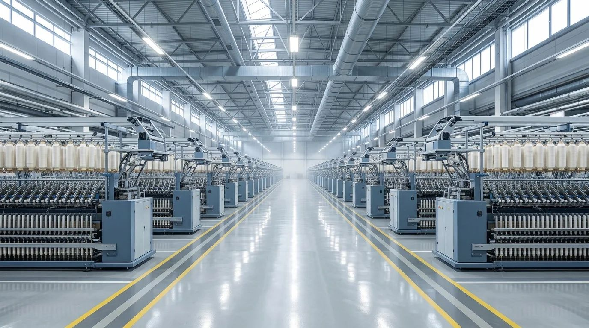
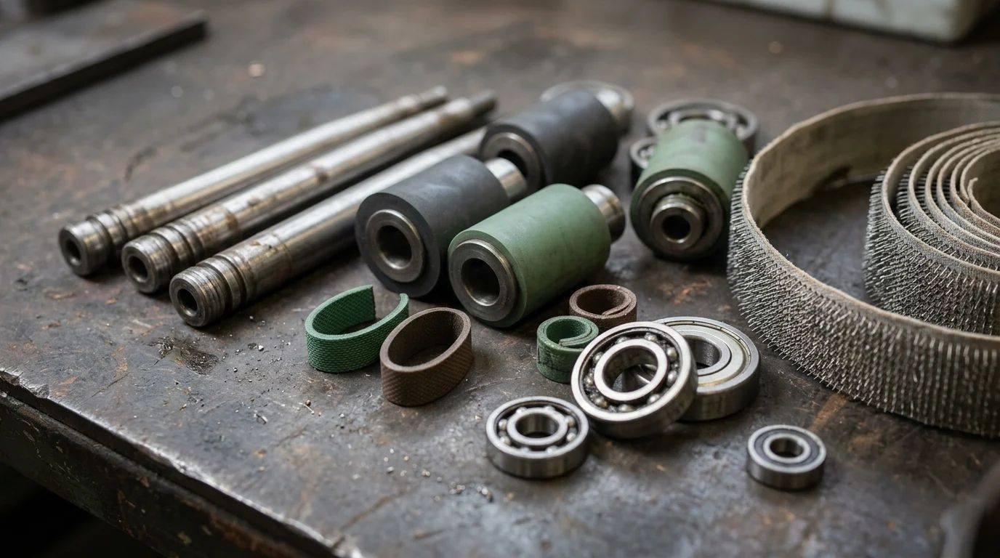
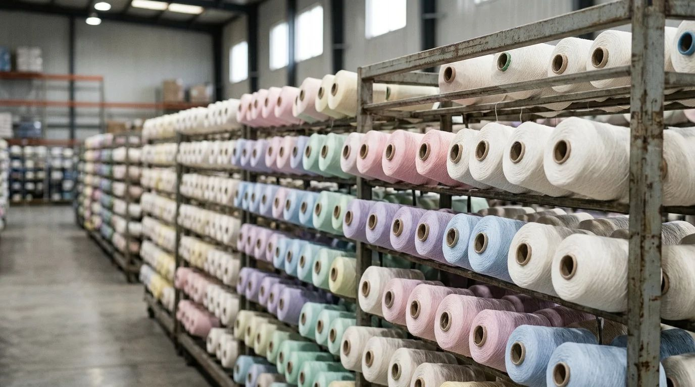
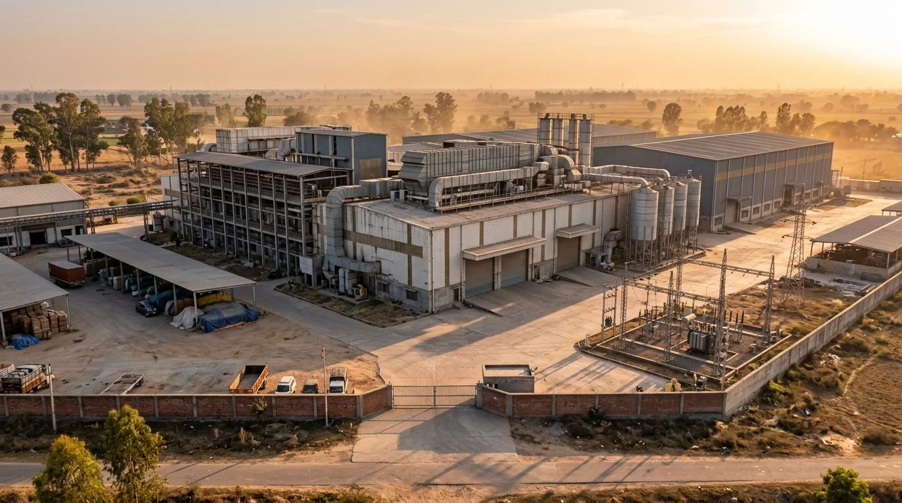
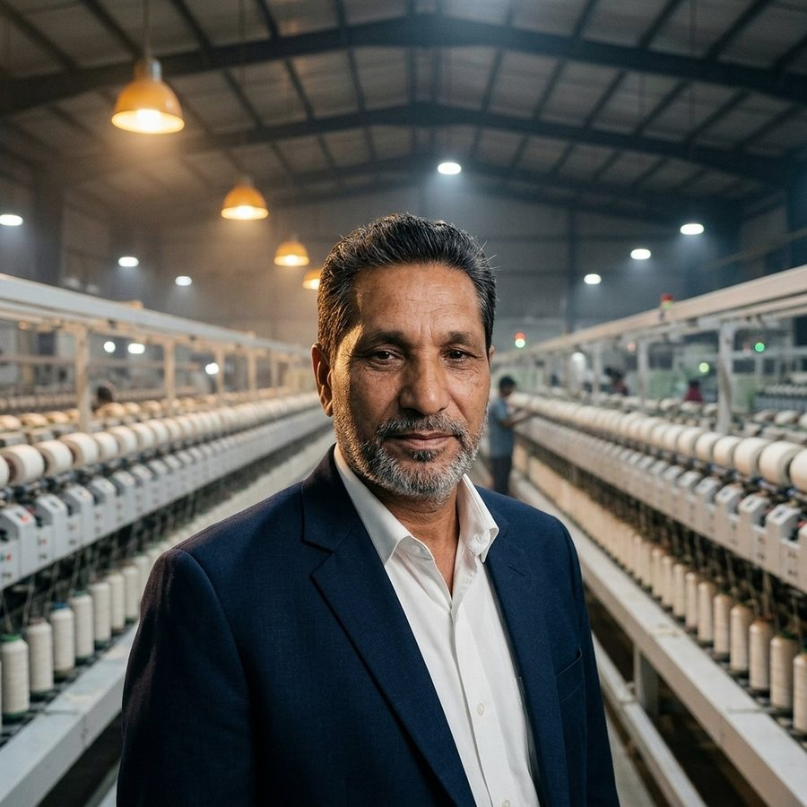

Blowroom
Bales→Clean tufts
Compressed bales are opened, the cotton is plucked into small tufts, cleaned of trash and blended so every kilo runs the same.
Trützschler · Rieter blowroom lines
Lahore · Faisalabad · Since 1988
We specialize in buying and selling all types of new and pre-owned textile machinery. Spinning is our core, with spare parts, yarn and cotton, and complete mills alongside it.
Makes we buy, sell and source parts for
Brand names belong to their owners. M Tech trades new and pre-owned machinery of these makes; we are not their official agent.
What we do
One company for the machine, the parts that keep it running, the yarn it makes, and the mill itself.

New & pre-owned machinery, bought and sold
Learn more
Every part a spinning line runs on
Learn more
All kinds of yarn; local and imported cotton
Learn more
Complete mills, deals and advisory
Learn moreInside the machine
How cotton becomes yarn
Bales→Clean tufts
Compressed bales are opened, the cotton is plucked into small tufts, cleaned of trash and blended so every kilo runs the same.
Trützschler · Rieter blowroom lines
Tufts→Card sliver
The card separates the fibres one by one into a fine web, then gathers that web into a soft rope called sliver.
Trützschler TC · Rieter C series
6 to 8 slivers→One even sliver
Several slivers are doubled and drafted together. Thick and thin places cancel out and the fibres lie straight.
Rieter RSB · Trützschler TD
Sliver→Combed sliver
Short fibres and neps are combed out. What is left makes finer, stronger and cleaner yarn.
Rieter E series · Marzoli
Sliver→Roving
Sliver is drawn thinner and given a light twist so it can be wound onto bobbins for the ring frame.
Toyota FL · Zinser · Marzoli
Roving→Yarn
The final draft and twist. Thousands of spindles turn roving into yarn, wound onto small cops.
Zinser · Toyota RX · Marzoli · LMW
Cops→Cones
Yarn from the cops is checked by the clearer, faults are cut and spliced, and it is wound onto large cones ready to sell.
Murata · Schlafhorst · Savio
Sliver→Yarn
Rotor spinning skips the simplex and ring frame and makes coarser yarn straight from sliver, at high speed.
Rieter R · Schlafhorst Autocoro
How a deal works
No middle layers. You talk to the family that has run M Tech for over three decades.
Start a conversationA machine to buy, machinery to sell, a part, yarn or cotton. Call or WhatsApp with the details.
We see the machinery, check its condition and tell you honestly what it is worth.
Terms are agreed face to face and every deal is documented properly.
We arrange dispatch from our godown. Installation and shifting are available on request.

Founder & CEO
Over three decades in spinning, from spare parts to complete mills.
Abdul Rasheed Gill started in spinning in 1988 and built M Tech from spare parts into machinery, complete mills and imports. Today his four sons work alongside him.
Tell us what you need. We answer on call and WhatsApp, and godown visits are by appointment.